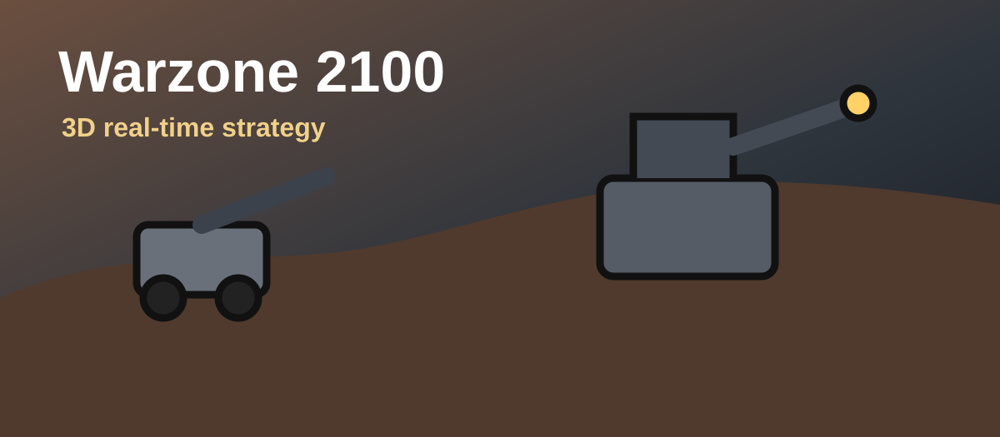

Research nonstop
Falling behind in tech makes every fight harder.
Warzone 2100
Warzone 2100 is a free open-source 3D RTS with campaign, skirmish, and multiplayer.
Download Warzone 2100
Basics
RTS
Falling behind in tech makes every fight harder.
Send units together instead of one at a time.
Pull damaged units back before losing them.